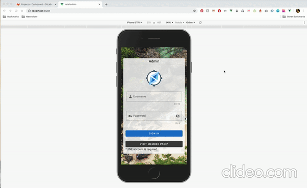

  <ion-header translucent>
    <ion-toolbar>
      <ion-title>Modal Content</ion-title>
      <ion-buttons slot="end">
        <ion-button (click)="closeModal()">Close</ion-button>
      </ion-buttons>
    </ion-toolbar>
  </ion-header>
  <ion-content>

    <ion-list *ngIf="currentDemoModal === '2'" class="ion-justify-content-center ion-align-items-center">
      <ion-item>
        
      </ion-item>
    </ion-list>
    <ion-list *ngIf="currentDemoModal === '2.1'" class="ion-justify-content-center ion-align-items-center">
      <ion-item>
        
      </ion-item>
    </ion-list>
    <ion-list *ngIf="currentDemoModal === '3'" style="display:flex; justify-content: center;">
      <ion-item style="width:50%" class="ion-justify-content-center">
        
      </ion-item>
    </ion-list>
  </ion-content>